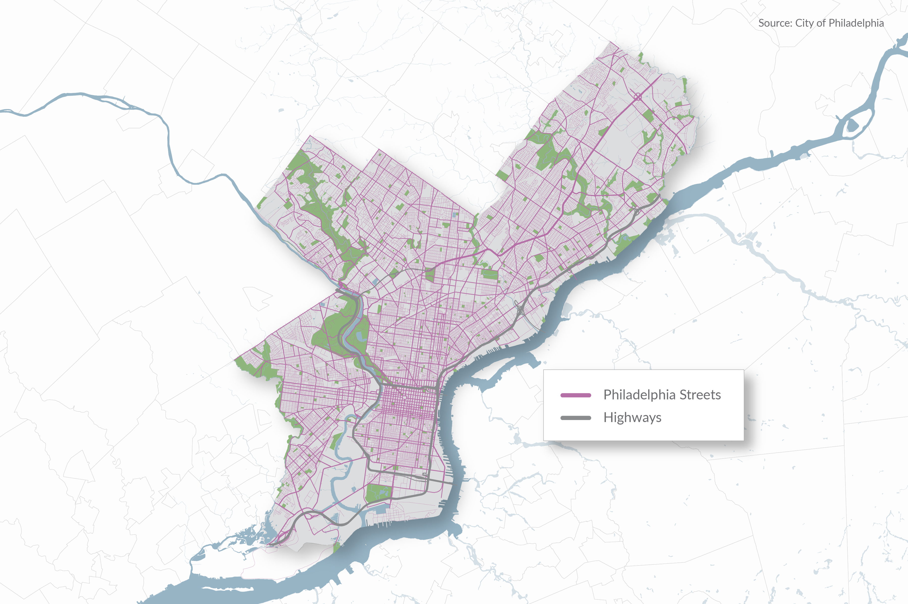
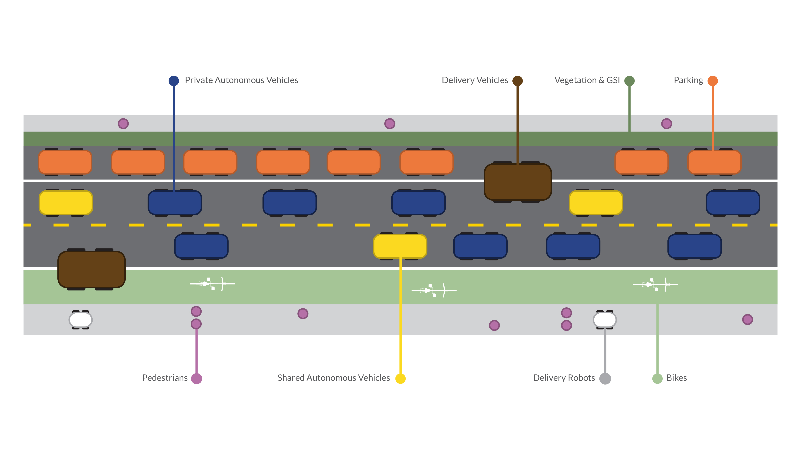
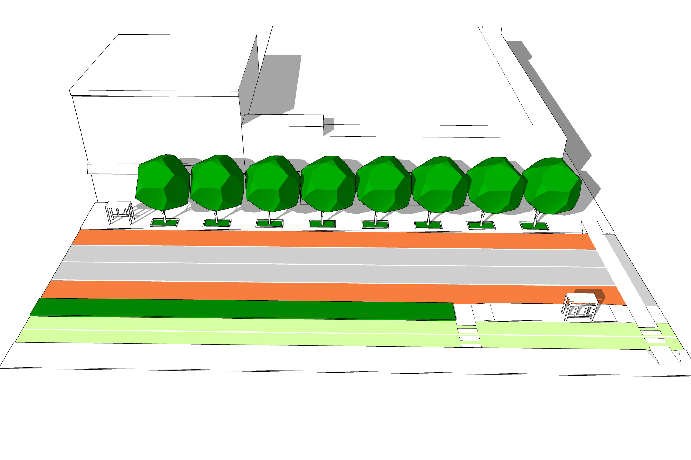
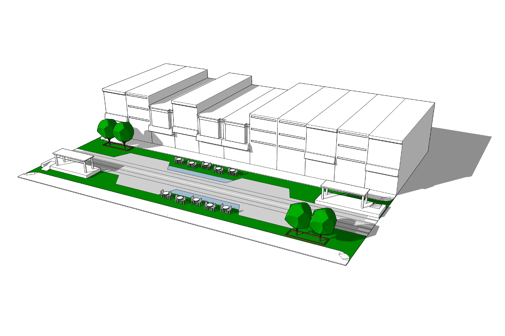
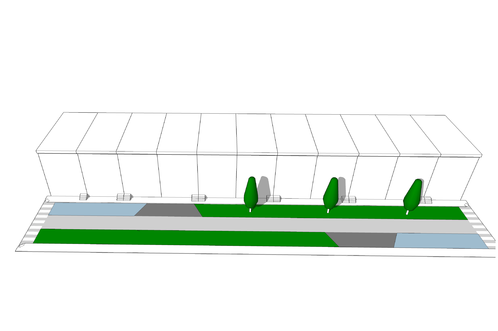
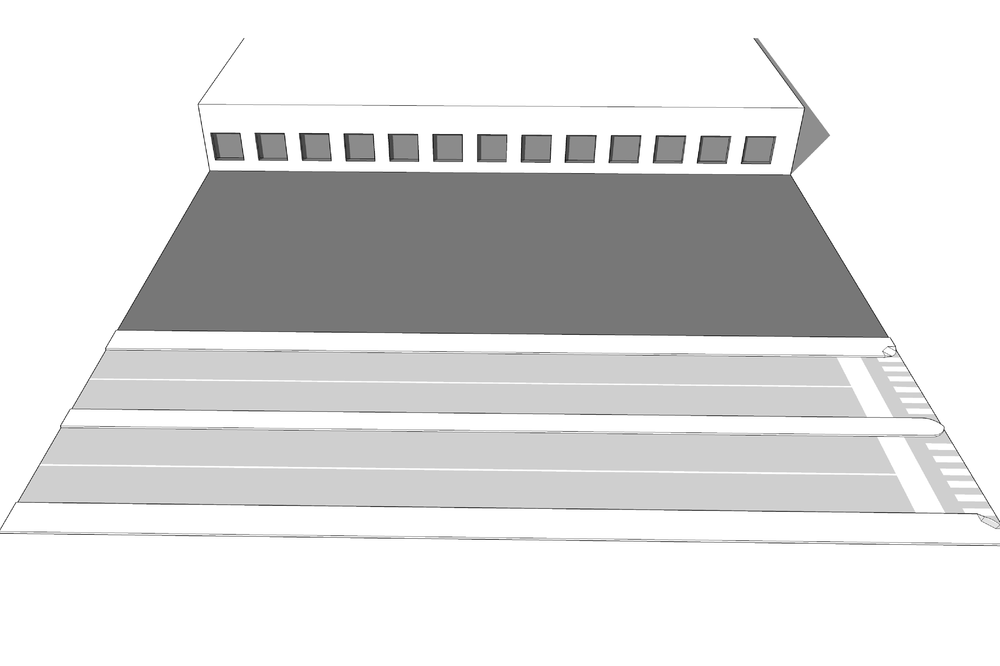
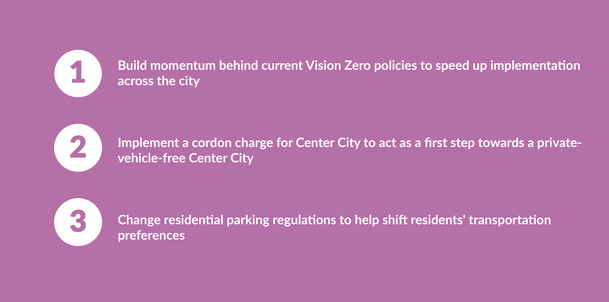

Streets
What do Streets Look Like?

What is the future of streets?

In 2060, Philadelphia streets are places that people stay in, rather than just move through. Streets serve the public realm and transportation network. They are accessible, flexible, and useful for every resident and visitor.
Typologies

Moving

Meeting

Living

Playing

Distributing
Strategies
S1.
Require Only Off-Street Parking
S2.
Ban Private Cars in the Urban Core Zone
S3.
Create a Network of Separated-Mode Arterials
S4.
Allow for Shared-Mode Residential and Commercial Lanes
S5.
Utilize Reclaimed Right-of-Way as Public Space
S6.
Design Environmentally Responsive Streets
S7.
Facilitate Shipping and Deliveries
Urban Core Zone

Kingsessing/Elmwood
Bustleton


Getting Started
